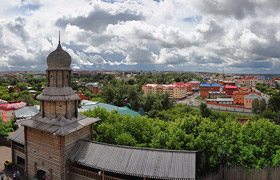
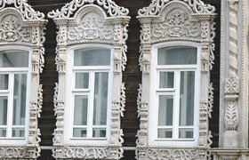

Water-Rock Interaction — is the International Symposium providing a great opportunity for many leading scientists, young scientists and students in the field of geochemistry, geology, hydrogeology, hydrology and other Earth and Environmental sciences from all around the world to exchange ideas and share an experience on a broad field of science.
Tomsk – Siberian Athens
TOMSK is history
Tomsk is one of the oldest cities in Siberia. It was found in 1604 by decree of Boris Godunov. Tomsk is the city where the first, behind Ural, University was established. It is the city of Siberian merchants, exiled Decembrists and Chekhov whose spirit stayed on the streets and in the walls of old buildings in baroque and classical style.

TOMSK is universities and science
Tomsk is called “city of students”. Every 5th citizen of Tomsk studies at a University. Tomsk is the oldest major education, research and innovation center in Siberia. It counts 6 universities, 15 research institutes, Technology Development Special Economic Zone and 6 business incubators. Due to the fact of high density of universities, Tomsk was unofficially named as “Siberian Athens”.
TOMSK is wooden architecture
Wooden architecture of Tomsk is a magnificent heritage of art and is a doubtless “name card” of the city. Since the 17th century wood has been the most affordable and thus favorite building material in Siberia. The beautiful houses, dressed in carved lace, the oldest wooden architecture transfer you to world of merchants.

TOMSK is the heart of Siberia
In Tomsk, there are many green areas, such as parks, gardens, and etc. The city is surrounded by endless forest (taiga) with magnificent flora and fauna. Guests often associate Tomsk with its bitterly cold winter months. But they rarely think that there are beautiful sunny summers with highs of up to 30°C / 86°F and a completely frost-free period of around 120 days.